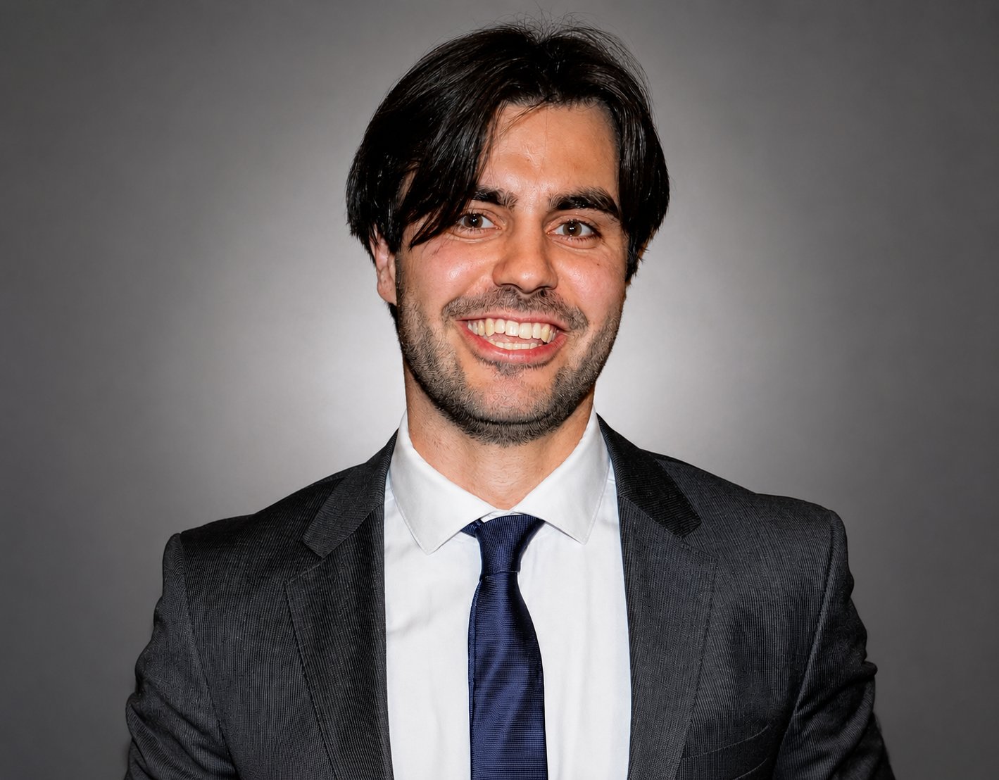

Industrial Engineer at BMW AG, leading global initiatives in process automation and scalable digital transformation. My academic journey across Munich and Milan, combined with corporate strategy experience in the United States, has shaped a strong international outlook. I am currently preparing for my MPhil at the University of Cambridge. In parallel, I am dedicated to social impact as Vice Chairman of the Taste of Malawi NGO, contributing to sustainable development initiatives.